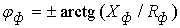

С этой целью:
1. Собрать схему (рис. 11.4, а) на рабочем поле программы EWB или на рабочем поле программы MS8 Education (либо открыть файл Lr11Y.ewb при работе в среде EWB или файл Lr11Y.ms8 при выполнении работы в среде MS8SD) и установить следующие режимы и параметры устройств и элементов:
- ЭДС трёхфазного источника G3F (рис. 11.4, б) программы EWB:
ЕA[220V/50Hz/0Deg]; ЕB[220V/50Hz/240Deg]; ЕС[220V/50Hz/120Deg];
- ЭДС трёхфазного источника G3F (рис. 11.4, б) программы MS8SD:
ЕA[311V/50Hz/0Deg]; ЕB[311V/50Hz/240Deg]; EС[311V/50Hz/120Deg];
- режим АС вольтметров V (RV = 1 MΩ) и амперметров A (RА = 1 mΩ);
- управляемые клавишами Q, W и S контакты;
- комплексы сопротивлений фаз приёмника (нагрузки, рис. 11.4, в):
Za = Zb = Zc = R + jX = [(20 + N) + j30], Ом для четных N и
Za = Zb = Zc = R - jX = [(20 + N) - j30], Ом для нечётных вариантов, где N - номер записи фамилии студента в учебном журнале группы.
2. После проверки собранной схемы цепи запустить программу EWB или программу MS8SD . Показания измерительных приборов для четырёхпроводной и трёхпроводной схем при равномерной и неравномерной нагрузках (состояние ключей и сопротивления фаз указаны в таблице) занести в табл. 11.1.
3. По данным эксперимента построить векторную диаграмму фазных напряжений и токов (в масштабе) потребителей четырёхпроводной цепи при неравномерной нагрузке. Фазные углы определить по формуле . Сравнить величину построенного вектора тока IN с его экспериментальным значением.